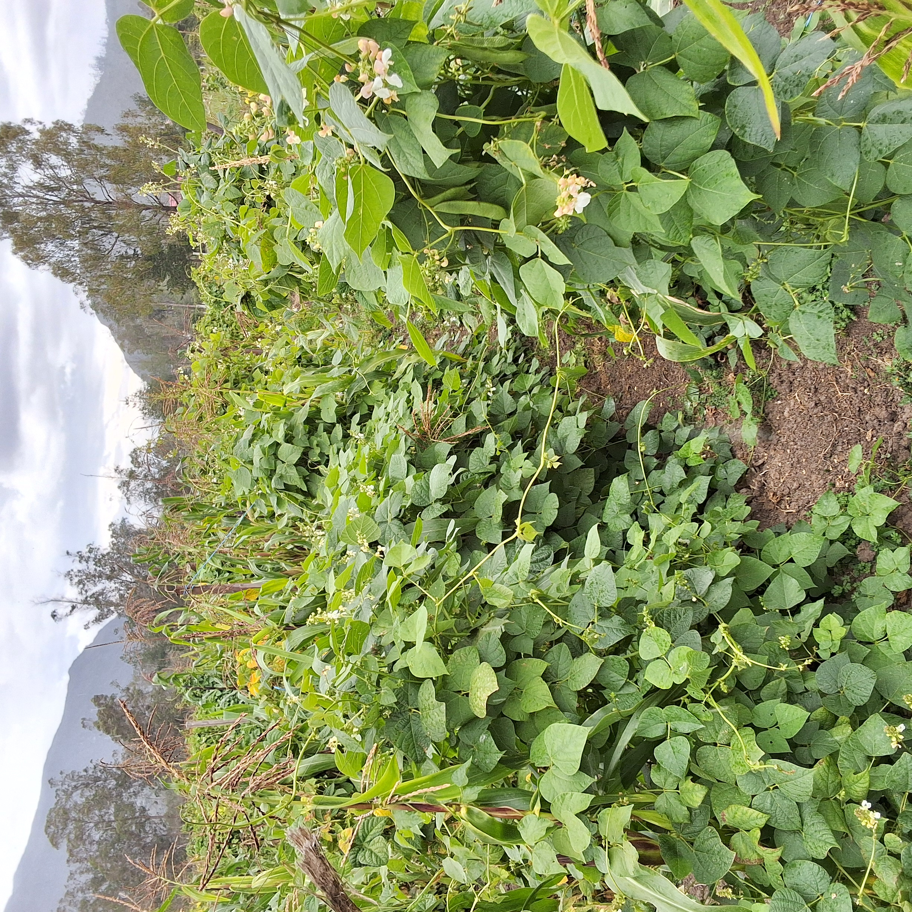

CATÁLOGO DE
FRIJOL
DEL BANCO DE GERMOPLASMA DE LA UNTRM

UNIVERSIDAD NACIONAL TORIBIO RODRÍGUEZ DE MENDOZA DE AMAZONAS
CENTRO DE INVESTIGACIÓN EN GRANOS Y SEMILLAS CEIGRAS
CATÁLOGO DE
FRIJOL
DEL BANCO DE GERMOPLASMA DE LA UNTRM